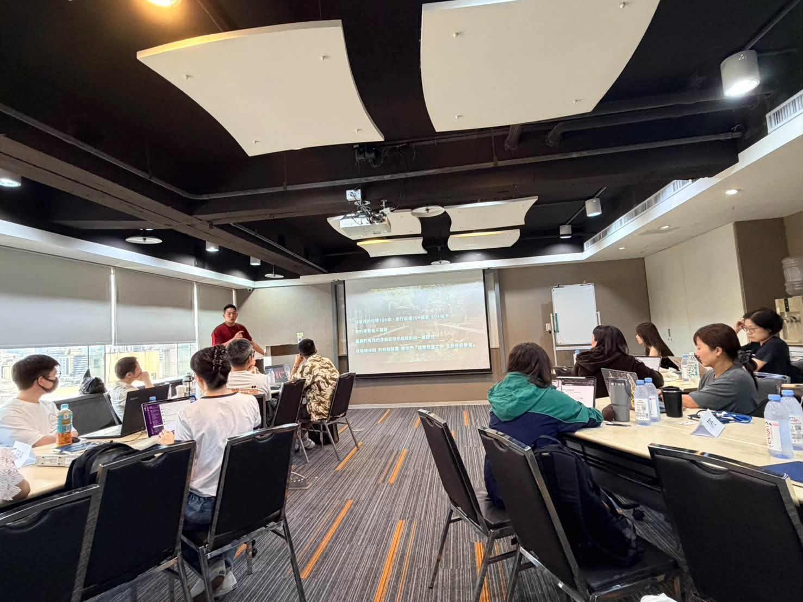
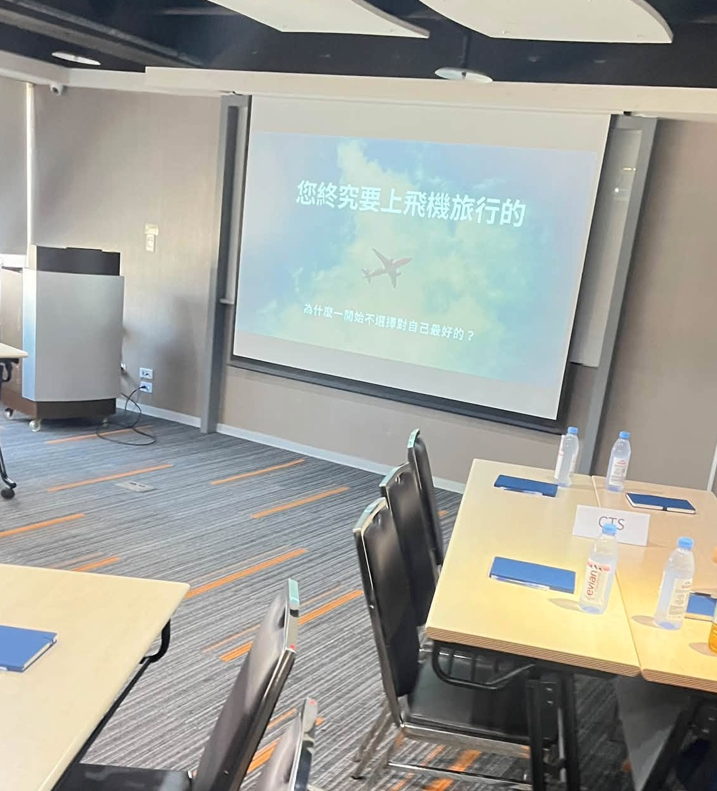
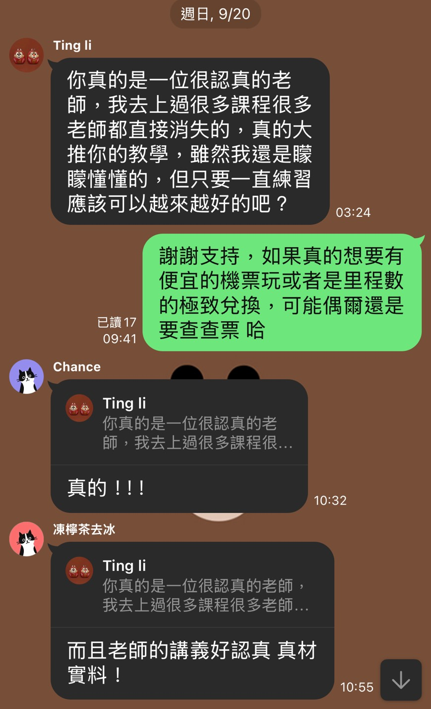
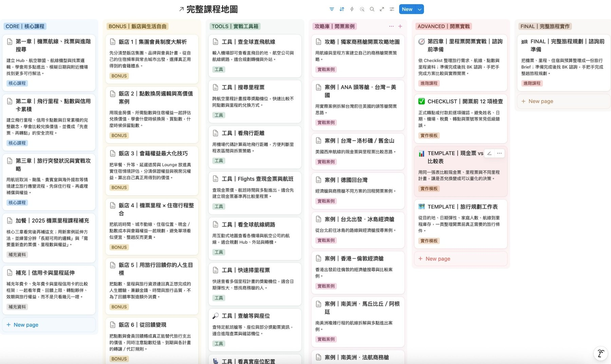
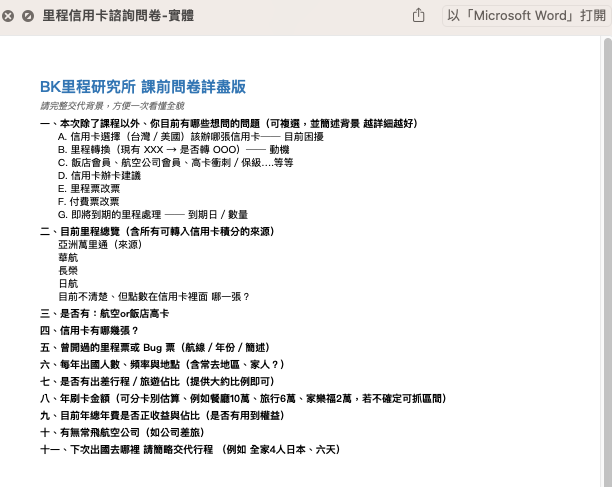
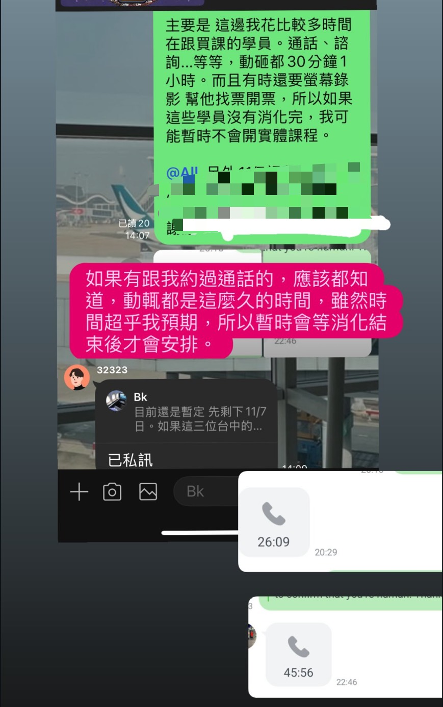
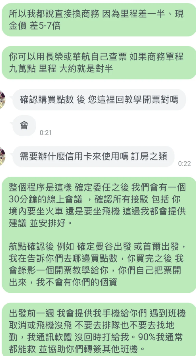
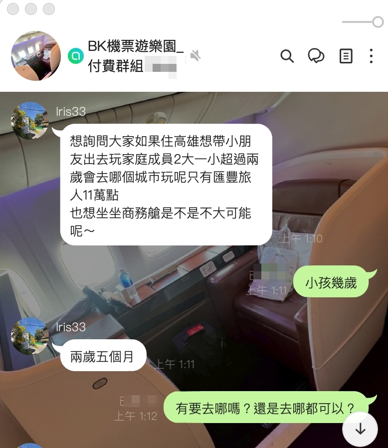

不是只找便宜票，而是看懂票背後的規則
真正會玩里程的人，看的是整套旅程結構：航空公司 Hub 怎麼串、聯盟怎麼互通、點數怎麼累積、里程怎麼兌換。
15-MIN COURSE INTRO
如果你正在考慮這堂課，我建議先看這支影片。裡面我會直接說明課程內容、和網路免費資訊最大的差別，以及購買後我會怎麼透過一對一諮詢、找票、買點策略與出行應變，陪你把學到的方法真正用出來。
影片長度約 15 分鐘｜適合正在考慮課程、想先了解內容與陪跑方式的人
WHY IT MATTERS
多數人買機票，只停留在比價網站與搜尋結果。今天查到便宜票就覺得賺到，明天遇到轉機、多城市、外站、航班取消、里程兌換，又重新回到一片混亂。
真正會玩里程的人，看的是整套旅程結構：航空公司 Hub 怎麼串、聯盟怎麼互通、點數怎麼累積、里程怎麼兌換。
你學會的是判斷能力。什麼時候該用現金票、什麼時候該用里程票、什麼時候該換點數、什麼時候該改航點。
這門課把查票、累積、兌換、諮詢與開票流程整合起來，目標不是讓你多懂幾個名詞，而是讓你真的拿到成果。
直接查看方案 →WHY PAY FOR KNOWLEDGE?
現在最不缺的是資料。真正困難的是：資訊是真是假、規則有沒有改、適不適合你的條件，以及數十種做法裡，哪一條才是對你最有價值的路徑。
我做的不只是整理資料，而是把自己實際花過時間、真實成本與旅程經驗跑過一輪後，替你篩選出可用資訊、高價值資源與更適合你的選擇，盡量避開不必要的試錯成本。
所以在資訊越來越便宜的時代，一對一判斷、經驗傳承，以及有人願意陪你把問題處理到能執行，反而變得更珍貴。
VALUE LADDER
先知道航空公司怎麼設計轉運點，才知道外站票、多點進出與轉機怎麼規劃。
理解三大航空聯盟、會員計畫與機型配置，讓你不只會查一條路線，而是會找多種解法。
模糊日期、附近機場、一鍵搜尋、最少轉機、追蹤航段票價，讓你的查票效率真正提升。
從信用卡、住宿、消費、訂閱、吃飯與活動開始累積，讓你還沒上飛機就開始累積未來旅程。
不是只知道里程能換票，而是知道怎麼規劃、怎麼找位、怎麼避開常見浪費。
颱風、航班停飛、貴賓室、海外提款與臨時變動，不再只是靠運氣處理。
PROOF OF OUTCOME
我是 10 年里程玩家，本課程已銷售 5 年。過去學員購買課程後，透過諮詢協助，98% 均在 2 個月內開出第一張商務艙機票。
所以這不是一門「你自己慢慢看」的課，而是一套錄播課＋群組研討＋一年一對一諮詢的成果導向流程。目標很清楚：讓你把第一張商務艙機票開出來。
STUDENT OUTCOMES
下面這些案例，包含學員的實際開票成果、諮詢對話、點數換票與長期旅遊策略整合。你買到的不只是知識，而是一套真的能落地的里程旅行系統。
把日常消費、信用卡與點數累積整合起來，不用每次都用原價買票，也能把商務艙與頭等艙做成可以規劃的旅行選項。

不是丟給你一堆資訊自己研究，而是透過一對一諮詢把查票、行程、飯店與點數策略整合，陪你把成果真的做出來。

從投資、信用卡、飯店到點數換票，這門課不只教一種技巧，而是幫你建立一套可以長期優化、長期應用的旅遊升級系統。

不只高艙等才有價值，經濟艙點數開票也能省下可觀旅費。核心不是只開一張票，而是學會之後每次出國都能重複使用。

你不需要學一輩子才看到成果；只要成功開出一張商務艙機票，就有機會值回課程價格。
更重要的是，這套查票、累積、兌換的方法，未來每一次出國都能反覆使用。FROM OFFLINE TO ONLINE
實體課可以一次密集吸收，但大家工作、家庭與行程都很忙，不一定每次都有辦法排出完整一天。線上完整課程的優勢，是你可以照自己的時間反覆觀看，同時保留我最重視的「陪你把票真的開出來」這件事。
查票、里程、飯店與開票流程都能按照自己的節奏重新複習，不需要在一天內全部記住。
實際要出國時，可以依你的航線、日期與點數狀況討論；需要時也會用螢幕錄影教你怎麼操作。
有新的兌換方法、航線變化、飯店或信用卡玩法，會持續在群組交流，不是上完課就結束。


滿意度 100%・0 負評
STUDENT FEEDBACK
除了開票成果，我也很重視學員實際學習時的感受。課程不是錄完就結束，而是希望你真的理解、真的會操作，遇到問題時也能找到人討論。

WHY BUY NOW
票價規則、轉機限制、航線調整、會員制度都在變。你越早學會底層邏輯，越能自己判斷，不被資訊焦慮牽著走。
真正關鍵不是刷很多錢，而是知道哪些消費、信用卡、住宿與活動能累積，並知道怎麼把點數用在高價值兌換。
當你理解里程兌換與開票邏輯，商務艙就不再只是偶爾犒賞自己的奢侈品，而是可以被規劃出來、被重複使用的旅行選項。
RETURN ON LEARNING
很多課程學完只是「知道更多」，但這門課的目標很直接：讓你把里程真的換成高價值機票。商務艙、頭等艙原價動輒數萬到十幾萬，只要你成功開出一次，就可能直接超過課程費用。這不是花錢買知識，而是買一套能幫你把旅費價值放大的能力。
而且這不是一次性的優惠碼。你學會的是一套可以反覆使用的方法：每次規劃旅行、每次信用卡消費、每次查航線與開票，都能繼續累積價值。
WHO THIS IS FOR
如果你一年只飛一次，單純問一下需要多少點、把票開一開就好，我相信市場上很多人都能幫這個忙。
但如果你一年會出國 3–4 次以上，也開始研究里程、信用卡、點數怎麼用，那你真正需要的就不是「有人幫你開這一次」，而是學會怎麼讓每一次旅行都少花一點、把剩下的點數繼續留給下一趟。
如果你是這種旅人，直接看方案 →一般做法，單程商務艙常見要 25,000 點以上，還要付 3,000 多元台幣稅金。換一個開票方式，同一趟旅程可能只要 16,500 點，稅金也能壓到 不到 NT$1,000。
有位學生把長榮票開好、發到 Facebook，我看到後立刻打給他，請他利用網站把票退掉，再換另一個方式。原本大家常見的做法可能要 75,000–80,000 點，重新規劃後只需要 6 萬多點。
省下來的點數不是消失，而是可以留給下一次航程，甚至在合規前提下轉換成其他價值。長程線每一次少浪費一點，累積下來的差距可能比課程本身還大。
COMPLETE COURSE MAP
從機票航線、里程與信用卡，到飯店會籍、查票工具、開票案例、實戰模板與諮詢前準備，課程已經整理成一張完整地圖。你不是買零散資訊，而是把每次出國會遇到的問題，放進一套可以照著走的流程。

FREE RESOURCE
如果你還在觀望，不確定自己現在適不適合進課程，可以先看這份免費路線圖。它會先幫你整理從新手到老手的里程學習方向，讓你知道里程、信用卡、查票、兌換與旅程規劃之間到底怎麼串起來。
看完之後，如果你發現自己不是只想問一次票，而是想把未來每一次旅行都規劃得更聰明，再回來選擇適合你的方案。
CURRICULUM
不教網路常見的 Trip、Skyscanner 與外站四段等基礎操作，重點在真正可複製的查票邏輯與進階實作。
此部分會在群組內研討，並約一個大家可以的時間來討論。
把「遙遠的退休計畫」變成「可立即規劃第二人生」：從信用卡策略、買點數、換機票到航點規劃，建立可以現在就開始執行的旅遊升級路線。
真正的旅行升級，不只發生在飛機上。這一章會把信用卡、飯店會籍、早餐、升等、延遲退房與海外支付一起整合，讓你的每一次出國體驗全面升級。
WHAT'S INCLUDED
ONE-YEAR SUPPORT
從出發前盤點、找票與開票，到行程中的異常處理，再到課後群組持續更新，整套支援都圍繞著「讓你真的會用」來設計。
ONE-YEAR SUPPORT
這堂課真正有價值的地方，不只是影片內容，而是你在實際出行前遇到問題時，有人可以幫你整理條件、判斷路線、找票、確認買點策略，也在航班出現狀況時協助你判斷下一步。
如果問題範圍比較大，我會先請你填寫問卷，整理目前的信用卡、里程、點數、飯店會員、出發時間與目的地。第一次通話不是從零開始，而是直接針對你的條件做判斷。

如果你不會找票，我會協助你判斷去哪裡買點、怎麼查票、哪個方案比較適合。很多時候會需要通話、查詢、螢幕錄影教學，甚至反覆確認航段與價格。
你省下的，不只是票價，還有自己上網查資料、試錯與驗證資訊的時間。
出行前一週，我會提供手機給學員。遇到班機取消、改票、航班異常或銜接問題時，不用自己亂打客服、亂查資料，我會協助判斷該找哪個客服、怎麼說、要注意什麼條件。

你買到的是完整課程內容、開票邏輯、一年諮詢、實際找票協助、買點策略、螢幕錄影教學，以及出行前後遇到問題時的判斷支援。
AFTER-CLASS SUPPORT
學員加入後會進入課後支持群組。實際查票、里程兌換、飯店、信用卡或旅程規劃遇到問題，都可以在裡面提出來討論。
如果之後有課程更新、玩法調整、里程規則改變，或我發現新的方法，也會持續補充到群組裡。你不是只買到現在這一版內容，而是跟著整套系統一起更新、一起升級。

PLAN DIFFERENCES
如果你想先把查票、里程、飯店與開票方法完整學會，選擇 19,800 完整課程；如果你還想把台卡、美卡、飯店會籍與點數累積效率一起規劃，選擇 29,800 進階整合方案。
適合想把查票、里程、飯店與旅行升級一次學完整，並在一年內把第一張高價值機票真的開出來的人。
適合想把台卡、美卡、飯店會籍與里程兌換一起規劃，讓日常消費直接服務未來旅行的人。
依你的消費習慣、剛性支出與旅遊目標，安排台卡／美卡／點數的最佳組合。
提供安全且可執行的申辦順序、轉卡節奏與累積策略，不是只給你一堆卡名單。
包含美國地址、電話、Apple Pay、卡費繳納與後續使用重點，避免你自己摸索踩雷。
把機票、里程、飯店會籍、信用卡與高價值兌換路徑，整合成可長期複製的旅行升級系統。
如有需求，可提供紙本或電子版「機票里程實戰課暨諮詢服務契約書」，方便公司採購、負責人簽核或個人留存使用。
FAQ
可以。課程會從外站、Hub、聯盟與航線基礎開始，逐步理解查票、里程累積、兌換與旅行應變。
課程已錄製完成，購買後可以直接開始學習；另外還有群組研討與一年一對一諮詢。
是，方案包含一年一對一諮詢與保證開票班（意思為會協助幫你找票，並個別依你的航線螢幕錄影教你開票），協助你在實際規劃與開票過程中少走彎路。
註：為符合政府規範，故無法在契約或廣告記載「終身」、「永久」等用語或類此字。一對一諮詢一年後，如果還是不熟悉，會再多送一年。
不以這些基礎內容為主。課程重點放在 Hub、聯盟、航線、進階查票與可延伸的規劃邏輯。
適合。即使你先從經濟艙與一般出國開始，這套機票與里程邏輯也會幫助你省下旅費、提高彈性，未來再逐步升級。
可以。課程裡面會教你購買點數的方法，不一定要靠辦信用卡累積里程；信用卡只是其中一種加速工具，不是唯一方式。
可以。如有需要，可提供紙本或電子版服務契約書，方便公司採購、負責人簽核、報帳或個人留存使用。需要時請直接透過 LINE 告訴我即可。